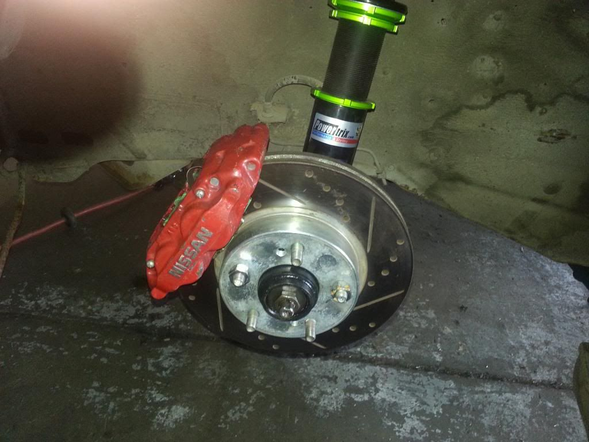

-
I don't think the stock breaks are adequate for 300+ hp
What are most people doing for brake upgrades? I heard of some going with Z32 brakes? -
You could go EVO 8/9 front 4 pot brakes with a 13" Cobra rotor (bigger and better than z32 fronts)
Or you could be a baller like me and go CTS-V 6 pot brakes with a 14" 370z rotor (18" minimum wheels required)
-
Here's a link to the Z32 front brake mod. Its fairly simple and inexpensive to do.
http://www.xenonz31.com/Z32brakeupgrade.html

1988 300ZX Turbo, Shiro Special #760
1988 300ZX Turbo Automatic (wife's car)
1991 Hard-body 2WD
http://zccw.org/zccw/?page_id=1215 -
you can also look into S13 etc. BBK's, a member on here is running Wilwood calipers on Mustang Cobra 13" rotors.Damn dirty angels....these cars!
Current Daily Driver - 86 Turbo.
Under the cover - THE BANANA… that needs to be re-energized.
sigpic -
What happened to the Braking Sticky? That had a ton of good information.86na - BlueZ
Shiro #366 - Kouki Monster
85t - Mr Tickles -
1988 300ZX Turbo, Shiro Special #760
1988 300ZX Turbo Automatic (wife's car)
1991 Hard-body 2WD
http://zccw.org/zccw/?page_id=1215 -
For 300hp the stock 87T brakes with good pads should be enough, it's not like these cars came with undersized brakes from the factory like cars from the 60's -
IIRC the pad choices for the twin piston calipers is a bit lacking though. then again, I havent looked much, since I dont have them. Running around VIR I had brake fade problems - running Super Blue fluid, drilled/slotted front rotors (got them free, and are thick), with Stock 85T single piston calipers and decent parts store pads… it's the next major upgrade on MY list!Damn dirty angels....these cars!
Current Daily Driver - 86 Turbo.
Under the cover - THE BANANA… that needs to be re-energized.
sigpic -
I have Alex's old 95TT front brakes on my 86T with a Z32 master and they do the job pretty good with around 250hp

1988 300ZX Turbo, Shiro Special #760
1988 300ZX Turbo Automatic (wife's car)
1991 Hard-body 2WD
http://zccw.org/zccw/?page_id=1215 -
Hint, make it a sticky again.Originally posted by reddzx
I have been using EBC Green Stuff on the twin piston calipers blank Centric premium rotors. After they were broken in they have an awesome bite and I have been very impressed. Have not had the chance to put any real heat to them to see if the fade out. I just switched from superblue to motul 600 since it seems to be more available rather than having to order online.Originally posted by Axel kain86na - BlueZ
Shiro #366 - Kouki Monster
85t - Mr Tickles -
I learned long ago that making a car go fast without a proportionate upgrade to braking capacity can actually result in 60 - 0 stopping distances of less than 10 feet. One time only. -
Aren't you running the Wilwoods too?Originally posted by adamvann3 View Post
I'm currently running Wilwood Superlite 4 pistons on 350Z Track rotors (around 13" diameter). I'm using Stoptech blank rotors and Wilwoods pads (the exact model of pad escapes me at the moment).Prius… because Pretentious wouldn't fit across the back of the car…
Cheap, Fast, Reliable - pick any two
My 1986 Turbo Build -
Deleting posts are we mods? Sometimes this place makes me wonder…
As I said before I highly recommend Amreboot's Evo 9 Brembo with Cobra rotors. I have them on my Shiro and am very pleased. -
Shiro - Wilwoods superlites, wilwood pads and 350z Track 12.75" centric premium slotted rotors, ATE superblue. Looking to move to a 2 piece rotor in the near futureOriginally posted by jaqattack02 View Post
86 2+2 - z32tt iron calipers, pbr pads and 350z Track 12.75" centric premium blank rotors rotors, ATE superblue.
85t - Rebuilt 87t twin piston calipers, ebc green stuff pads, 87t centric premium blank rotors, Motul 600.
Everything I have is still running the OEM BMC with no issues. Wilwoods are by far the best setup, stopping power, pedal feel ect… but that is also due to the shiro having the best setup; suspension, wheel and tires combos too. OEM setup on the 85t is very capable but I have not had enough wheel time and situations to compare braking. The z32 setup on the 86 2+2 we previously on the shiro, good upgrade but I was never too impressed with the pedal feel.
All my feedback and information is in the brake sticky.86na - BlueZ
Shiro #366 - Kouki Monster
85t - Mr Tickles -
Aside from the discussions in my BBK thread that is…
I believe 13" is the sweet spot for this car, with good pads, it should be able to handle a nice wide wheel without a ton of weight, like 17x10
Of course if your geometry is hopeless, it doesn't really matter what kind of brakes you have, you'll have weird results

Copyright © 2006–. All rights reserved. Privacy Policy